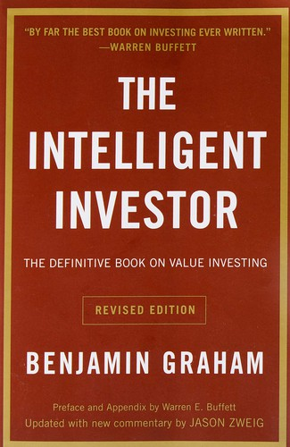

本杰明·格雷厄姆（Benjamin Graham）被公认为"价值投资之父"，他在哥伦比亚大学商学院的课堂上培养了包括沃伦·巴菲特（Warren Buffett）在内的一代投资大师。《聪明的投资者》（The Intelligent Investor）于1949年由Harper & Brothers首次出版，此后历经多次修订，其中1973年的第四版是格雷厄姆生前最后审定的版本，也是流传最广的版本。2003年，财经记者贾森·兹威格（Jason Zweig）在每一章后附加了详细的注释和当代案例，使这本半个多世纪前的著作在新的市场环境中依然保持了高度的相关性。巴菲特在本书序言中写下了那句被无数次引用的评价："这是有史以来关于投资的最好的一本书。"
格雷厄姆在书中建立了价值投资的三大基石概念。第一是"投资"与"投机"的区分：投资是一种经过深入分析、承诺本金安全并期望获得适当回报的行为，不符合这些条件的操作都是投机。这一定义看似简单，却从根本上界定了投资者应有的心态与行为准则。第二是"市场先生"（Mr. Market）的寓言：格雷厄姆请读者想象自己拥有一位名叫"市场先生"的合伙人，他每天都会出现，报出一个价格，愿意买入你手中的股份或者把他的股份卖给你。市场先生情绪极不稳定——有时他乐观得近乎疯狂，出价远高于企业的内在价值；有时他又悲观到绝望，以远低于价值的价格抛售。聪明的投资者不应被市场先生的情绪左右，而应在他出价荒谬地低时买入，在他出价荒谬地高时卖出，其余时间则忽略他的存在。第三是"安全边际"（margin of safety）——这是全书最核心的概念：以显著低于内在价值的价格买入，从而为分析中可能存在的错误和不可预见的不利因素留出缓冲空间。
全书对两类投资者分别给出了详尽的建议。"防御型投资者"缺乏时间、兴趣或专业能力进行深入分析，格雷厄姆建议他们将资金分配在高等级债券和多元化的股票指数之间，并根据市场估值水平调整两者的比例。"积极型投资者"则需要付出大量时间和精力，通过定量筛选（如低市盈率、低市净率、稳定的股息记录、充足的流动资产）和定性分析（管理层品质、竞争地位、增长前景）来寻找被市场低估的个股。格雷厄姆反复告诫读者：超额回报不是通过承担更高的风险来获得的，而是通过更深入的研究和更严格的纪律来实现的。他对成长股投资持谨慎态度，认为为未来的高增长支付过高的价格是投资者最常犯的错误之一。
格雷厄姆的思想经由巴菲特、芒格、塞斯·卡拉曼（Seth Klarman）、霍华德·马克斯（Howard Marks）等人的传承与发展，至今仍然是全球价值投资实践的理论根基。巴菲特曾说，他在十九岁时读到《聪明的投资者》，"那是我一生中最幸运的时刻之一"。芒格虽然在投资方法上对格雷厄姆做了重要的修正——从"以合理的价格买入伟大的公司"取代"以便宜的价格买入平庸的公司"——但他始终承认格雷厄姆所建立的安全边际原则和理性投资纪律是不可动摇的基石。对于任何希望认真理解投资本质的读者而言，《聪明的投资者》不仅是一本入门书，更是一本需要在每一轮市场周期中反复重读的经典，因为它所针对的人类弱点——贪婪、恐惧、从众、过度自信——永远不会过时。